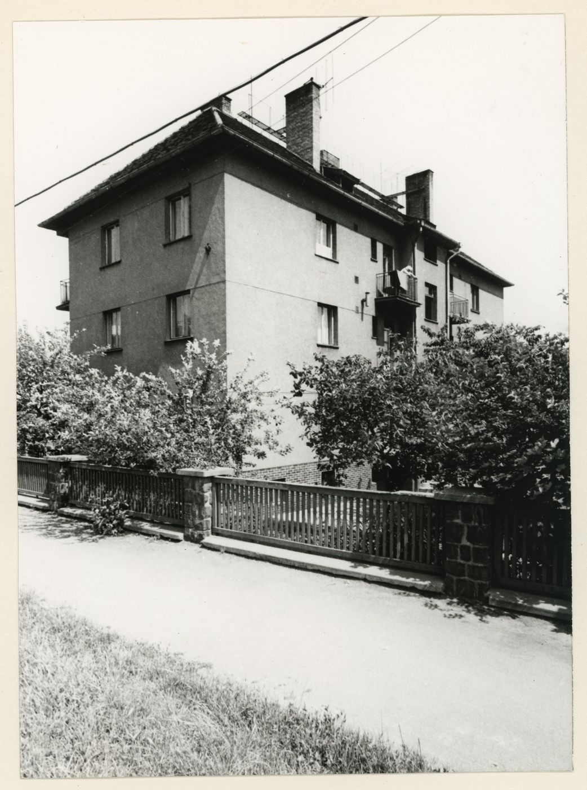
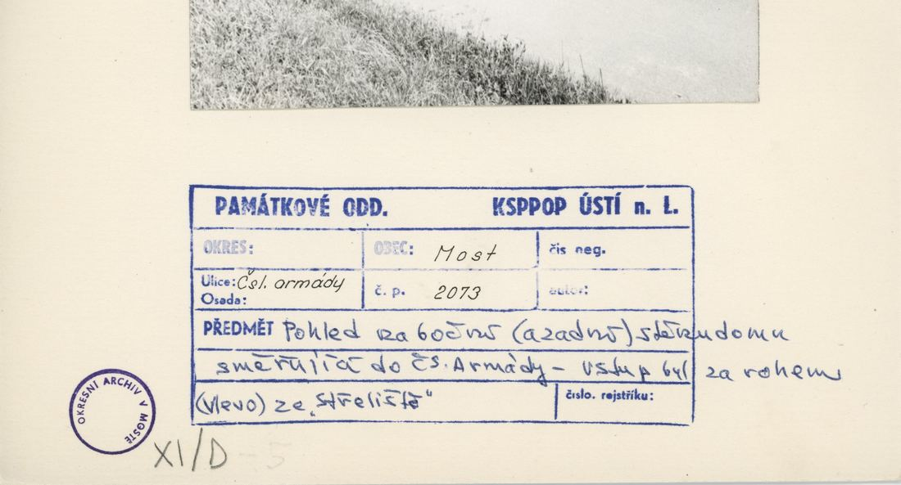
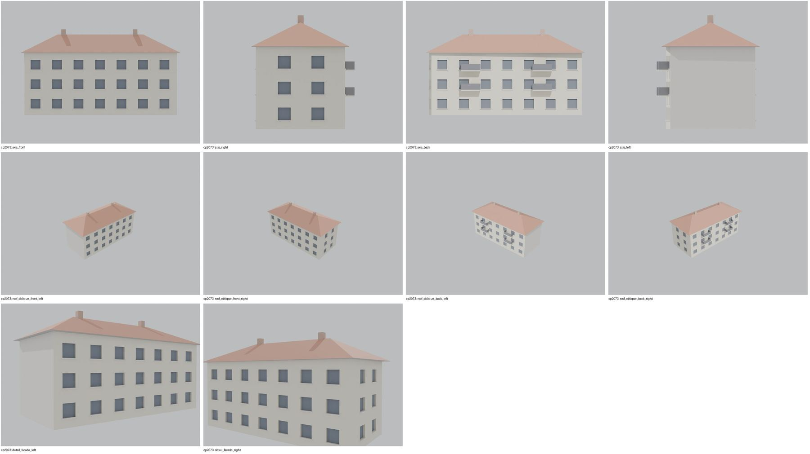
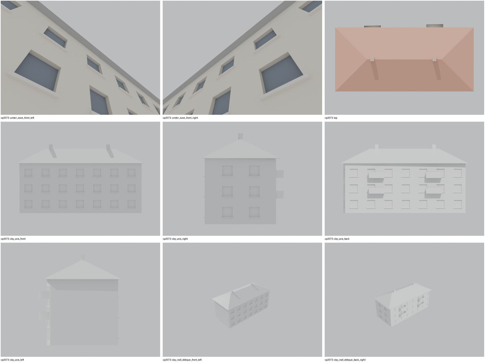
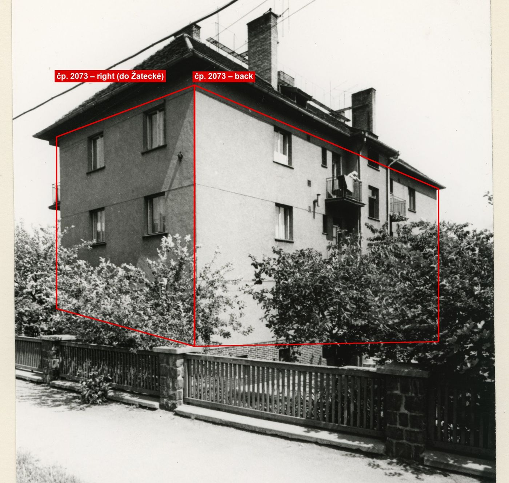

Identita domu
Třípodlažní bytový dům s valbovou střechou a balkony na nároží Na střelišti/Vančurova („novostavba čp. 2073“ dle karty 1906,1914,1918). Foto cp_2073_001 (ze zahrady). Bez plánu.
Použité prameny: cp_2073_001 PHOTO (+karta).
GIS: GIS id 2074 (235 m², obdélník 10,3 × 23,4 m, delší strana podél Na střelišti). V oblasti „Cs_Armady“ je dům veden podruhé se stejnými přílohami.
Prameny (2 příloh)
Všechny přílohy domu v databázi Libuše, každá otevřená a zapsaná v plan_search.json. Stav rešerše plánů: not_found_in_searched_scope; žádný plán v přílohách. Kliknutím otevřete větší náhled.


fotografie
SHA-256 5742fc9428b7…


archivní karta (rub) · výřez textu
SHA-256 8d239c6f3d91…
Model
| Revize modelu | r4 (zachované revize: r1, r2, r4) |
|---|---|
| Poloha | GIS půdorys id 2074 |
| Šířka průčelí | 23,43 m |
| Výška okapu | 9,60 m (odhad) |
| Podlaží | 3 |
| Střecha podle pramenů | valba |
| Střecha v modelu | valbová / sedlová (hřeben, valby, štíty) |
| Otvory | 48 |
| Vikýře / vedlejší hmoty | 0 / 0 |
| Polygonů | 735 |
Zdroje rozměrů, jak jsou zapsány v plánu modelu
| Rozměry | GIS id 2074 rectangle 23.43 x 10.34 m |
|---|---|
| Průčelí | photo cp_2073_001: 3 storeys, hipped roof, 2 chimneys, balconies on the garden side |
| Střecha | hip |
Kontrola r4: brána geometrie a 19 pohledů
Automatická brána (uzavřené podkroví, krytí střechou, UV, síť, počty otvorů proti fotografii s rámečkem) a 19 renderů: čtyři osy, čtyři šikmé pohledy na střechu, dva detaily průčelí, dva pohledy pod přední okap, pohled shora a šest pohledů bez barev materiálů. Stav: prošla.


Nálezy a opravy
- komíny (2) končily pod hřebenem a nebyly vidět – zvýšeno na hřeben + 0,8 m, nutná přestavba
- strana do Žatecké 2 osy, zadní strana s balkony ve 2 řadách
- vstup ze Střeliště nemodelován (poloha neznámá)
- po přestavbě 25. 10.: oba komíny nad hřebenem viditelné
Revize r4: doklad fasád a změny
Okna a dveře se počítají na fotografii s červeným rámečkem po dělicích zdech domu. Řádky oken jsou zdola nahoru; „hypotéza“ jsou otvory, které na snímku vidět nejsou.
| Fasáda | Okna po podlažích | Hypotéza (id otvorů) | Poznámka |
|---|---|---|---|
| main | – | G1, G2, G3, G4, G5, G6, G7, U1, U2, U3, U4, U5, U6, U7, T1, T2, T3, T4, T5, T6, T7 | hypotéza |
| back | – | BG1, BG2, BG3, BG4, BG5, BG6, BG7, BU1, BU2, BU3, BU4, BU5, BU6, BU7, BT1, BT2, BT3, BT4, BT5, BT6, BT7 | balkony ve 2 svislých řadách a 2 úrovních doloženy; počet os za stromy nečitelný |
| right | 2 / 2 | RG1, RG2 | 2 osy, horní 2 podlaží viditelná, přízemí za stromy = hypotéza |


karta: Pohled na boční (a zadní) stěnu domu směřující do Čs. armády – vstup byl za rohem (vlevo) ze Střeliště. GIS: hlavní (dlouhá) hrana leží 6,8 m od osy Na Střelišti, pravá kratší hrana 18,4 m od osy Žatecké. Pravá strana: 2 osy, horní dvě podlaží viditelná (přízemí za stromy); zadní strana: dvě svislé řady balkonů (2 úrovně) a okna, přesný počet os za stromy nečitelný.
Změny proti r2/r3
- closed attic, eave closures, gables along the roof underside, flat-roof covering slab, names for tools/most_qa (z4_post.py)
- facade evidence (framed photo cp_2073_001 + card text): the right short side toward Zatecka has 2 axes per storey (r2: no openings on that side); main facade (Na Strelisti, entrance) not photographed
- visual QA: 2 chimney(s) ended below the ridge and were hidden in the roof; raised to ridge + 0.8 m (photos show the chimneys above the roof; height = hypothesis)
Hypotézy
Vše níže je model_hypothesis, provisional, locked: false.
- počet os odhad
- výšky odhad (3,0 m podlaží)
- axes count 7 estimated
- all storey heights, opening sizes and roof pitches are estimates from photographs (model_hypothesis, provisional, locked=false)
- the long main facade faces Na Strelisti (entrance there per the KSPPOP card), the right short side faces Zatecka; the main facade itself is not photographed (model_hypothesis)
Soubory
- Model čp. 2073, GLB
- Pracovní složka: F:\MOST\output\zatecka_street_claude_2026-10-17\houses\cp2073\
plan_search.json,geometry_plan.json,README.md,texture_handoff_spec.json,r4/cp_2073_G_r4.blend,r4/qa/qa_review.json, rámečkyframes/cp2073_*